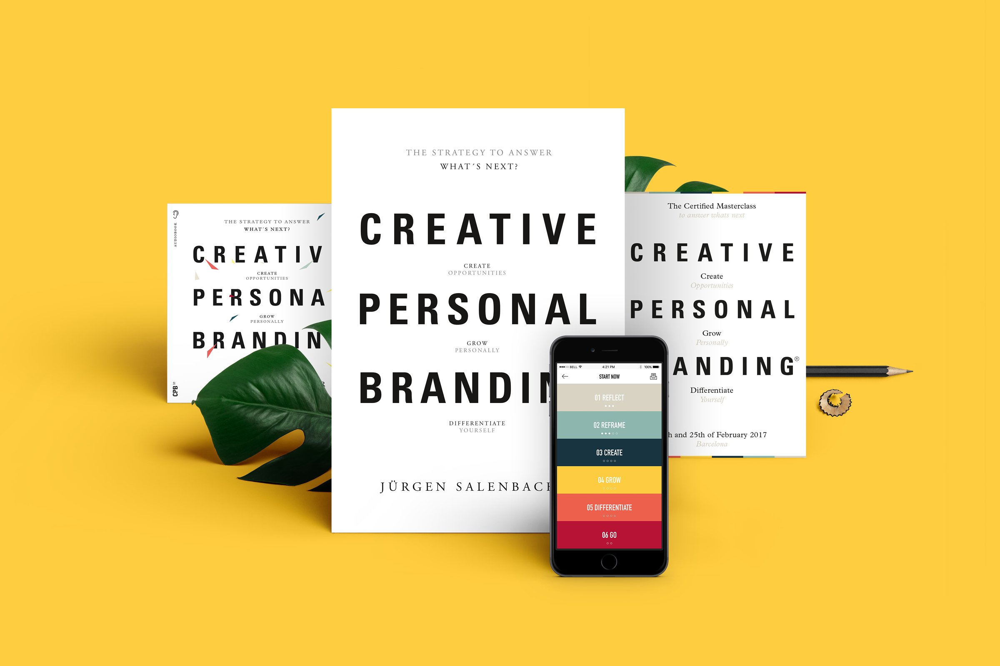
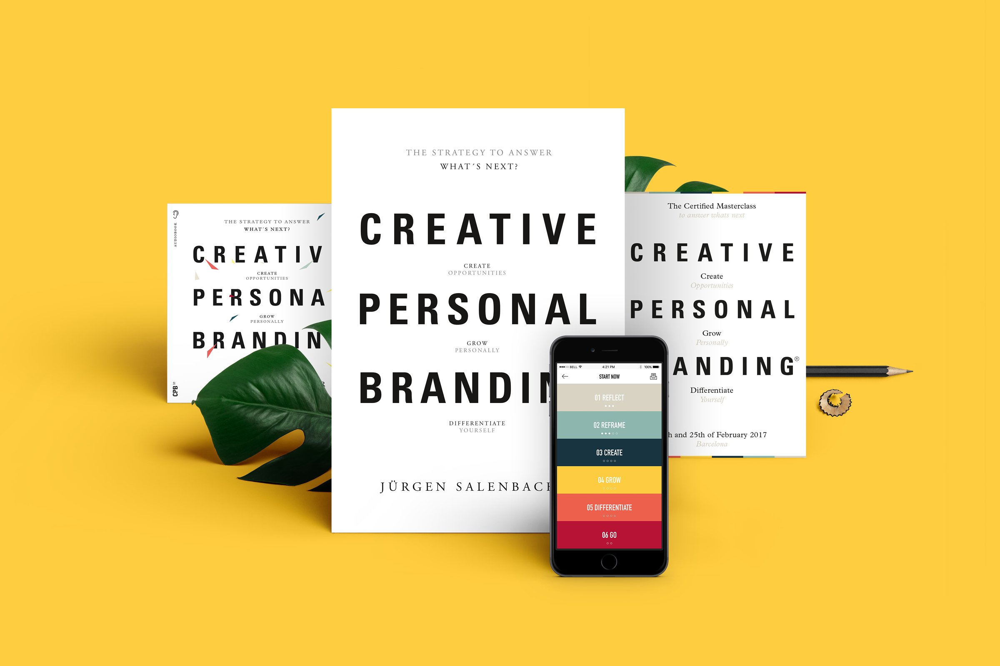

Creative Personal Branding
Юрген Саленбахер исследует работы ведущих теоретиков в области бизнес-культуры и объясняет, как методы брендинга могут помочь нам развивать творческое мышление. Эта книга является уникальным ресурсом для творческих умов, предпринимателей и команд, и может также использоваться всеми, кто сталкивается с важными жизненными решениями. Вы узнаете, как разбудить свои творческие способности, чтобы придумывать бизнес-идеи.
 

Full-stack product management
Планирование - это своего рода танец, вызывающий дождь. Возможно, он и не вызовет осадков, но вы совершенно точно станете более искусным танцором. Что такое бренд Множество людей считает, что бренд - продукт, но это не так. Брендинг - не известность и не конкретная вещь. Это скорее метафора сложного явления: история, значение, идентичность. То, что определяет бренд: его индивидуальность. Это эффективно Одно можно сказать точно: любите вы брендинг или ненавидите, но это одна из самых эффективных стратегий продвижения бизнес-идеи на рынках с высокой конкуренцией. Вспомните о следующих долгоиграющих идеях брендов: Swatch, Victoria’s Secret, Paul Smith.